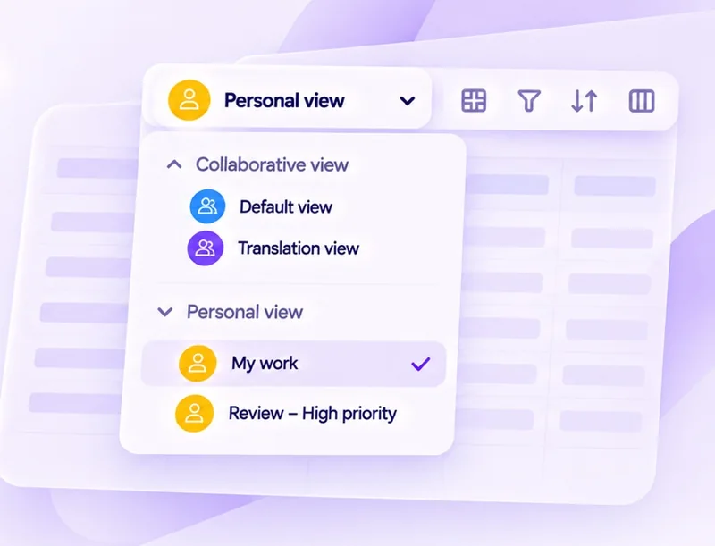
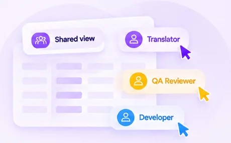
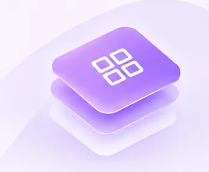
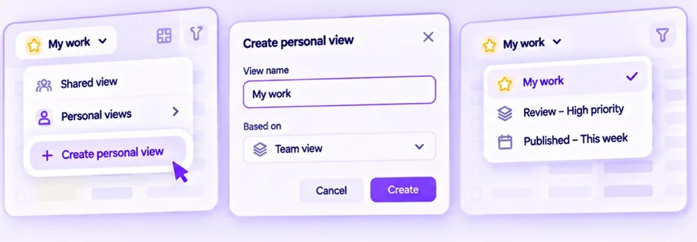

Case Study 04
When One View
Doesn’t Fit All
The Story Behind Gridly’s Personal Views
Giving each team member a private, customizable workspace without losing team alignment.
- UX/UI
- Web
- Product Design

Role & ownership
My Role & Ownership
I was the design owner, responsible for driving the project end-to-end from discovery to post-launch.
My Role
Product Designer (Owner)
- Define the problem and opportunity
- Design the solution and user experience
- Validate, ship, and measure impact
What I Owned
- Research & insights
- Solution definition
- Permissions & rules
- UX/UI design
- Validation & post-launch
Key Collaborators
- Product
- Engineering
- CX
The problem
One Shared View No Longer Works
As teams and projects grew, a single collaborative view created friction and disrupted individual workflows.

Constant Disruption
Changes like hiding columns or updating filters affected everyone.
Repetitive Setup
Users often had to readjust filters and layouts multiple times a week.
Different Needs, Same View
Translators, QA reviewers, and developers needed different layouts, filters, and priorities, but shared one setup.
- Translator
- QA Reviewer
- Developer
User research
User Research
We validated the problem with quantitative data and in-depth interviews.
Quantitative Insights
36%
Of view-related support tickets mentioned layout changes, missing filters, or hidden columns.
4.2×
Higher average view resets per user per week in large projects (10+ members) compared with small teams.
Repeated filter changes
Hotjar session replays showed users applying the same filters multiple times in a session.
Qualitative Insights
We conducted 8 in-depth interviews with translators, QA reviewers, and project managers.
| Role | Key pain point | User quote |
|---|---|---|
| Translator | Lost focus when others changed filters. | I finally got my view set up then someone else hid the column I need. |
| QA Reviewer | Needed temporary filters for QA runs. | I just want to filter issues for one language without messing up the team’s view. |
| Project Manager | Hard to maintain team consistency. | I spend time fixing the shared view after others change it again. |
The solution
Personal Views
A flexible, private workspace where each user can customize their layout, filters, and focus.

The Design
Personal Views add a layer on top of the shared view so each user can create, customize, and switch between their own views.
- Shared view
- Personal views
- My work
- Review – High priority
- Published – This week
- ＋ Create view
Key Benefits
More Focus
Each user sees what matters to them.
Less Friction
Personal changes no longer conflict with the shared setup.
Higher Productivity
Switch contexts faster and work with fewer interruptions.
Permission matrix
Access & Control
A role-based permission matrix defines who can access and manage views.
Permission Matrix
| Action / Role | Owner | Admin | Editor | Viewer |
|---|---|---|---|---|
| Create personal view | ✓Allow | ✓Allow | ✓Allow | ×No access |
| Edit own view (layout, filters, columns) | ✓Allow | ✓Allow | ✓Allow | −View only |
| Duplicate, rename, or delete own view | ✓Allow | ✓Allow | ✓Allow | −View only |
| Manage others’ views | ✓Allow | ✓Allow | −View only | ×No access |
| Share or change view permissions | ✓Allow | ✓Allow | −View only | ×No access |
| Set default view for the team | ✓Allow | −View only | −View only | ×No access |
Why It Matters
Right access
Give the right people the access they need.
Private views
Keep personal views private.
Flexibility
Let people customize their workspace while retaining team control.
The design
From Concept to Experience
A simple flow for creating, managing, and switching between personal views.
- 1
Create a Personal View
Start from the shared view and save your own setup.
- 2
Customize It
Adjust columns, filters, sort, and layout.
- 3
Switch Instantly
Quickly move between your saved views.

Design Highlights
Familiar & intuitive
Built on existing patterns to reduce learning time.
Flexible & personal
Let users work the way they want.
Lightweight & fast
Quick to set up and seamless to switch.
The impact
Real Impact in Practice
Personal Views helped large, multidisciplinary teams such as Rovio customize their localization workflows.
Reported Impact
10+
Team members at Rovio actively use Personal Views.
36%
Fewer view-related support tickets.
4.2×
Faster to find and switch to the right context.
Platform Manager, Rovio
“Gridly’s Personal Views let each team member set up their own workspace and switch between contexts easily. It’s simple, flexible, and fits perfectly into our localization workflow.”
Key takeaways
What We Learned
Lessons from designing and launching Personal Views, and how they shape what comes next.
Key Takeaways
Flexibility drives adoption
Let users tailor their workspace to their own needs.
Simple wins faster
A focused experience encourages quick setup and real use.
Context matters
Different roles and workflows require different views.
Permission is critical
Clear, role-based access keeps collaboration flexible and secure.
Next Steps
Short-term
Gather usage feedback and refine the design around real workflows.
Mid-term
Add improvements such as view linking, duplication, and templates.
Long-term
Expand personalization across dashboard, project, and team views.
Post-launch
What’s Next
The next phase expands Personal Views to more workflows and adds controlled sharing.
Roadmap
Now · More customization
Save filters, sorting, and column setups as part of the view.
Next · Team & sharing
Share personal views with specific teammates or roles using the appropriate permissions.
Later · Broader coverage
Bring Personal Views to more areas of Gridly, such as dashboards and projects.
Success Metrics (Next Phase)
≥ 50%
Adoption among active teams.
≥ 70%
User satisfaction (CSAT).
< 5 mins
Average time to set up a personal view.